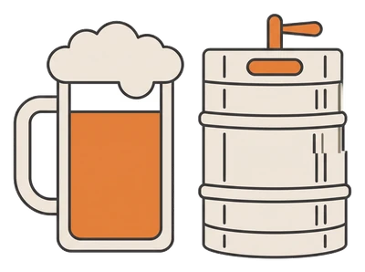
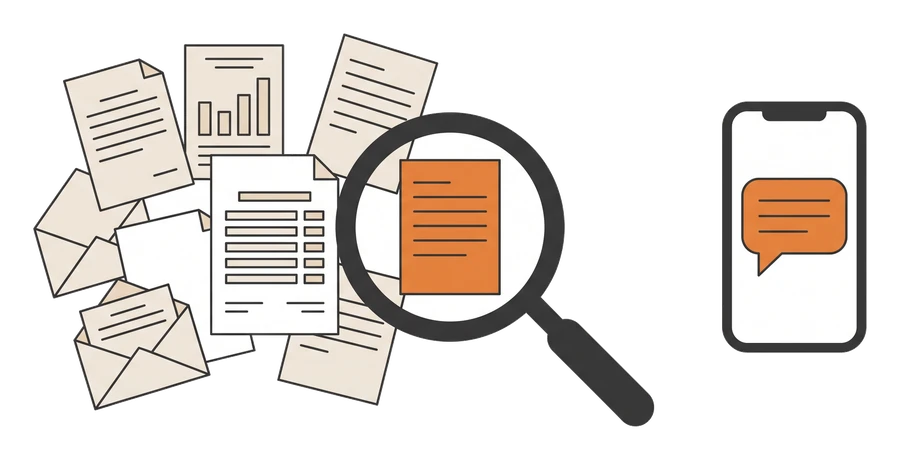
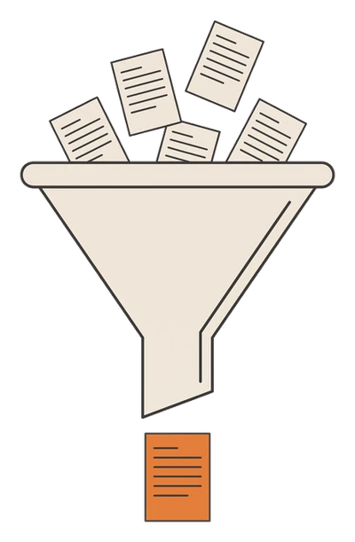
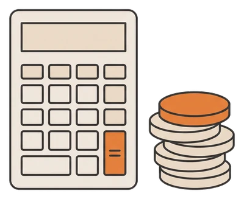
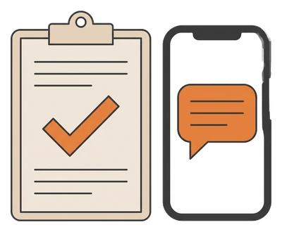
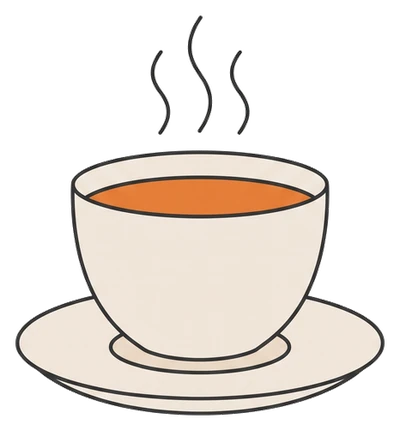
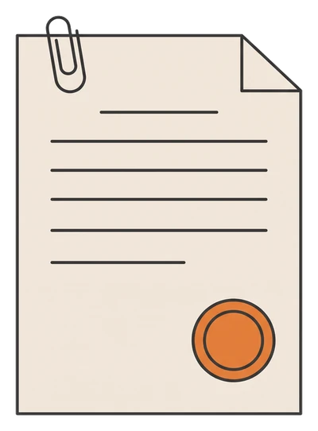
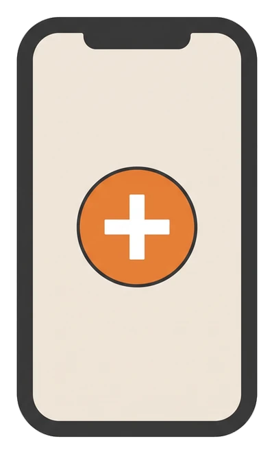
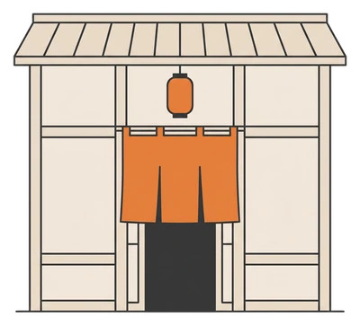
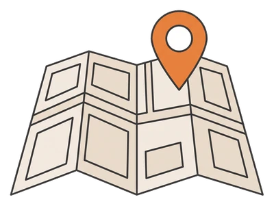

届く中身
業態ごとに、届く話が変わります。
1通でご案内するのは、その業態にいちばん響く1つの話だけです。

居酒屋・バーに届く見本10月1日から酒税が変わります。ビールは350mlあたり9.10円の減税、発泡酒と新ジャンルは7.26円の増税です。
生ビールの10L樽に直すと、税だけで約260円下がる計算です。仕入れ値が実際に下がるかは、メーカーと酒販店の価格しだいです。
飲み放題に発泡酒や新ジャンルを使っている場合は、逆に上がります。次の納品書で、樽と缶の単価を確かめてください。
大阪府の最低賃金は、10月1日から1,231円になります。54円の引き上げです。
週20時間のアルバイトを1人雇っている場合、人件費は月に約4,680円増えます。
10月1日より前に、求人票とシフト表の時給が1,231円を下回っていないか確かめてください。
都道府県は、登録のときに選んだ地域の数字が入ります。
しくみ
あちこちの発表を、AIが業態と地域に合わせて拾います。
どれも公表された情報です。ただ置き場所がばらばらなので、AIが代わりに拾い集めます。

- 集める役所や調査会社、メーカーの発表を毎月読み集めます。

選ぶ業態と都道府県に関係する話だけを選びます。
円に直す1杯・1食あたりと、月あたりの円に計算し直します。
確かめて届ける数字と出典を人が確かめて、LINEで1通お届けします。
詳細はこちら
ご自分で調べることもできます。ただ、発表の時期もそろっていません。2026年9月だけで、食品の値上げは4,923品目ありました。毎月それを追いかけて、自分の店に関係する話を探すのは大きな手間です。
選ぶときは、居酒屋には酒税、麺の店には小麦、というように業態で分けます。最低賃金のように県ごとに違う話は、登録された都道府県の数字を入れます。「12.0%」「1トンあたり70,020円」といった発表は、1杯・1食あたりの円に計算し直します。
値上げの情報は、たとえばこれだけの場所に分かれています。
- 帝国データバンク食品の値上げ品目毎月末
- 農林水産省小麦の売渡価格、野菜の価格見通し年2回と毎月末
- 製粉会社・食品メーカー業務用の価格改定の案内随時
- 国税庁酒税の改正改正のたび
- 都道府県の労働局最低賃金。県ごとに発効日が違う毎年秋
- 資源エネルギー庁電気・ガス料金の支援期間ごと
業態と地域に合わせた配信までは無料です。お店の納品書に合わせた計算は、有料のコミヨホウで行います。
ご案内の決まり
3つの決まりでご案内しています。
-
率ではなく、円でご案内
詳細はこちら
「12%」だけでは、店の判断に使えません。1杯・1食あたりの円と、月あたりの円でご案内します。 -

慌てなくていい時は、そうご案内詳細はこちら
大きく報じられても、店への影響が小さいことはよくあります。その時は「いまは何もしなくていい」と正直にお伝えします。 -

出典を必ずご案内詳細はこちら
帝国データバンク、農林水産省、メーカーの発表など、公表された資料だけを使います。見通しは、誰の見通しかもご案内します。
登録のしかた
登録は3タップです。

友だち追加ボタンから、LINEで友だち追加します。
業態を選ぶ麺の店、居酒屋・バー、定食・食堂、その他から選びます。
地域を選ぶ地方を選んでから、都道府県を選びます。
うかがうのは、業態と都道府県だけです。店名、電話番号、メールアドレスはうかがいません。配信を止めたいときは、アカウントをブロックしてください。
よくある質問
よくある質問
本当に無料ですか。
はい、無料です。お店の納品書から原価を計算する有料のサービス「コミヨホウ」をご案内することがありますが、無料の配信を受け取り続けるのに契約は必要ありません。
どこの情報をもとにしていますか。
帝国データバンクの食品値上げの調査、農林水産省の発表と野菜の価格見通し、各メーカーの価格改定の発表など、公表された資料です。毎回、出典もご案内します。
自分で調べるのと、何が違いますか。
情報そのものは同じです。どれも公表されています。違うのは手間です。あちこちの発表を毎月追いかけ、自分の業態と地域に関係する話を選び、1杯あたりの円に計算し直す。この3つを代わりに行います。
「1杯あたり何円」は当たりますか。
発表済みの値上げは、発表どおりの日付と率でお伝えします。1杯あたりの円は、発表をもとにした見込みの計算です。見込みの時は、そうご案内します。
どの業態が対象ですか。
いまは、麺の店、居酒屋・バー、定食・食堂の3つに合わせてご案内しています。「その他」を選んだ方の業態を見て、増やしていきます。
何通くらい届きますか。
月に1〜2通です。値上げが重なる月でも、お店に関係の深い話に絞ります。